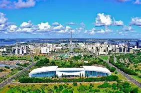
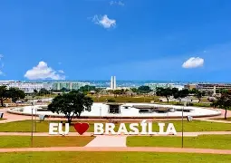
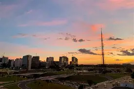

Brasília, cidade capital e lugar de divercidades culturais, gastronômicas e arquitetônicas.
-

O Centro de Convenções Ulysses Guimarães (CCUG) é um Centro de Convenções no Plano Piloto de Brasília, Brasil. Foi originalmente projetado pelo arquiteto Sérgio Bernardes e aberto em 12 de março de 1979. Uma grande reforma e ampliação, que triplicou a área do prédio original, foi concluída em 2005. É um dos maiores centros de convenções da América do Sul, podendo receber simultaneamente cerca de 9,4 mil pessoas ao mesmo tempo. Possui 37 mil metros quadrados de área construída com possibilidade de montagem de 11.400 metros quadrados de exposição. Pertence ao Governo do Distrito Federal, que também o administrava até 2018, quando o prédio foi concedido para a empresa Capital DF Administração de Centro de Convenções, que passou a gerir o espaço. Está localizado no Setor de Divulgação Cultural (SDC) do Eixo Monumental, na parte mais larga do canteiro central, estando perpendicular a via. Fica próximo à rede hoteleira, a quinze minutos do Aeroporto Internacional de Brasília. É referência na realização de eventos, palestras, feiras, shows ou congressos.
-

A placa "Eu amo Brasília" é um símbolo icônico localizado em frente à Torre de TV, inaugurada em 2014. Recentemente, a placa ganhou as cores do arco-íris em homenagem ao Dia Internacional da Visibilidade LGBTQI, celebrado em 28 de junho, visando conscientizar sobre a importância do combate à homofobia. O letreiro, que mede 2,80 metros de altura e 23,4 metros de comprimento, é considerado um ponto turístico e um marco da cidade, atrayendo tanto moradores quanto visitantes. Além disso, a placa é um cenário popular para fotos, promovendo o orgulho da população e a diversidade da cidade.
-

Com projeto urbanístico de Lúcio Costa e arquitetônico de Oscar Niemeyer, nascia uma cidade sob formas inovadoras, diferente em tudo e com um impressionante conjunto arquitetônico e urbanístico a céu aberto. Em 1987, tornou-se Patrimônio Histórico e Cultural da Humanidade e, em 2008, escolhida a Capital Americana da Cultura 2008, título reconhecido pela Organização dos Estados Americanos (OEA). Brasília é uma cidade à frente do seu tempo. Seu surgimento mudou o panorama do país, tanto político como econômico. Em 1883, um sonho de Dom Bosco previu o surgimento de uma civilização muito próspera, com um grande lago entre os paralelos 15º e 20º Sul, local onde hoje está localizada Brasília.Brasília é uma cidade completa. Possui um dos melhores Índices de Qualidade de Vida (IDH) do país e um passeio pelas largas avenidas da capital permite contemplar preciosidades com o paisagismo de Burle Marx, a arquitetura de Athos Bulcão, os vitrais de Marianne Peretti e as esculturas de Alfredo Ceschiatti e Bruno Giorgi.
-

A Torre de TV é um marco visual da cidade. É a segunda estrutura mais alta do Brasil, com 230 metros de altura, pode ser avistada de longe. Além de ser avistada de longe, a Torre de TV impressiona por sua imponência e prende os olhares quando vista de perto. Não é à toa que o ponto é um dos atrativos mais visitados da capital. O projeto é de Lucio Costa, arquiteto e urbanista responsável pelo projeto do Plano Piloto da nova capital. Foi inaugurada em 1967 para receber antenas de emissoras de rádio e TV. No primeiro piso, o mezanino se apresenta como um amplo espaço para eventos com 360º de vista para contemplação. No interior, um painel de azulejos de Athos Bulcão transforma a visitação numa experiência completa de Brasília e sua identidade. O mirante da Torre, a 75 metros do chão, é um passeio imperdível para quem visita Brasília e quer verdadeiramente entender a disposição urbana da cidade. A vista panorâmica das Asas Sul e Norte e dos monumentos dispostos no Eixo Monumental, emoldurados pelo Lago Paranoá, é uma experiência que se deve levar na memória. A visita à Torre de TV se completa com o passeio pela fonte luminosa e pela famosa Feira da Torre, que oferece aos visitantes o melhor do artesanato e da identidade locais.